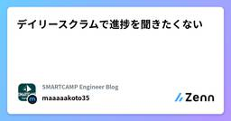

SMARTCAMP Engineer Blogのフィード
https://zenn.dev/p/smartcamp
SMARTCAMPに所属するエンジニアの個人記事を集めています。 記事の内容は個人の見解であり、社内でのレビュー等は行っておりません。
フィード

デイリースクラムで進捗を聞きたくない
SMARTCAMP Engineer Blogのフィード
今年は涼しいと聞いて歓喜していながら、来年の夏に猛暑だったら泣いちゃうなぁと思っています。さて今回はデイリースクラムあるあるを言いつつ自分なりに考えた回避方法を共有します🔥 デイリースクラムとはスクラムガイドには以下のように書いてあります。デイリースクラムの⽬的は、計画された今後の作業を調整しながら、スプリントゴールに対する進捗を検査し、必要に応じてスプリントバックログを適応させることである。デイリースクラムは、スクラムチームの開発者のための 15 分のイベントである。複雑さを低減するために、スプリント期間中は毎⽇、同じ時間・場所で開催する。https://scrum...
3日前

Devinさんもメンバーなのでエラー調査してくれますよね??
SMARTCAMP Engineer Blogのフィード
はじめに「エラー？ Devin君が勝手に片付けてくれるでしょ！」──そう思って Slack を開いたものの、通知の山を前に完全沈黙を貫く Devin さん。AI なのに労働組合でも結成したのか、はたまたバケーション中なのか……。結局、人間がタスクを中断してトリアージに追われる羽目になった経験はありませんか？エラー対応はソフトウェア開発の生命線ですが、集中している作業を遮られると生産性は一気に急降下します。本記事では、その「動かざること CPU のごとし」な Devin にムチを入れ、自ら一次調査を黙々と片付けてもらう仕組みを構築した事例を紹介します。Slack でスタンプを...
24日前
AWS ECS ローリングデプロイをブルーグリーンデプロイに切り替えるまでの道のり
SMARTCAMP Engineer Blogのフィード
AWS ECSでは標準的なデプロイ手法としてローリングデプロイを使用できますが、CodeDeployを使用したブルーグリーンデプロイを使用することもできます。先日ローリングデプロイからブルーグリーンデプロイに切り替える作業を行いましたが、いくつか躓くことがあったのでまとめたいと思います。 まずはじめにTerraformを使ってAWSにリソースを作成している前提です。ECSサービスAとBが存在しており、必要であればロードバランサー(以下ALB)のリスナールールでECSサービスBへリダイレクトするようにしていました。セキュリティグループやALB、ターゲットグループ、ECSサービス...
1ヶ月前
Aurora MySQL のmax_connectionsのデフォルト値はどうやって決まっているのか調べてみた
SMARTCAMP Engineer Blogのフィード
!この記事は私の疑問をAIを使って解決し、記事としたものですが、間違っている可能性もあるので参考程度にご確認いただければ幸いです。もし間違っている箇所があればご指摘ください。 はじめにAWS RDS を使用していると、各インスタンスタイプでmax_connectionsの値が自動的に設定されています。例えば、Aurora MySQL のdb.t4g.mediumではmax_connectionsが 90 に設定されますが、なぜこの値になるのでしょうか？本記事では、AWS の公式ドキュメントと実際の計算式を基に、この謎を解明します。 結論（先に知りたい方向け）db.t4...
1ヶ月前
自分が開発するアプリがAWS ECSに乗っかってるなら、できれば知っていて欲しいこと
SMARTCAMP Engineer Blogのフィード
想定読者自分が開発しているシステムの稼働環境がAWS ECSであることは知っているECSを触る機会がなく、ECSの全体像をイメージできない ECS（Elastic Container Service）ECS（Elastic Container Service）は、アプリケーションをコンテナ（例えばDocker）として実行するためのマネージドサービスです。ECSを使えば、インフラの管理を最小限に抑えつつ、コンテナアプリケーションのデプロイやスケーリングを効率よく行うことが可能です。もし自分が開発するアプリがECSにデプロイされているなら、以下の各要素の役割や基本的な流...
1ヶ月前
その修正、ダウンタイムは発生しますか？
SMARTCAMP Engineer Blogのフィード
今回は、先日自分が担当したインフラ(正確にはクラウド上のインフラ)の構成変更作業を振り返りつつ、タスクの性質がいつもとは変わっていることに意識を向けられていなかった、その反省について綴ります。 わたしは...元々バックエンドエンジニアで、1年ほど前からインフラの整備も担当することになりました。 何が起きたか いつも通りのタスク私の担当タスクは、インフラの一部構成を変更するものでした。このタスクが作成された当初は旧環境から新環境へトラフィックを向けるだけで切り替えが可能なので、大きなダウンタイムは発生しないという認識でした。リリースタイミングが日中だとしても、ユーザーに...
1ヶ月前
GitHub Actions を使うなら、気にしたほうがいいこと から1年経って得た知見
SMARTCAMP Engineer Blogのフィード
https://zenn.dev/smartcamp/articles/1444487997ae511年ほど前に GitHub Actions を使うなら、気にしたほうがいいこと というタイトルで記事を書きましたが、この1年でそれなりにGitHub Actionsを書いてきました。その中でこれ意外と使うかも、いいノウハウかもと思ったものをまとめました。 前段ワークフローが成功またはスキップの場合、実行したいワークフローによっては前段のワークフローが成功したとしてもスキップしたとしても、実行したい場合があると思います。その場合はif: ${{ !cancelled() &...
1ヶ月前
GitHubActions 複数のCodeDeployのデプロイを新コンテナが立ち上がるまで待機するためのShell芸
SMARTCAMP Engineer Blogのフィード
GitHubActionsでCodeDeployのデプロイを行い、新コンテナが立ち上がるまで待機したい...しかも複数環境...なんてことはないでしょうか？私はあります、そんなときに使えるShell芸を紹介します。 コード例name: example workflowon: workflow_call: inputs: ENVIRONMENT: required: true type: string AWS_REGION: required: false type: strin...
2ヶ月前
ECSサービス検出とCodeDeployのブルーグリーンデプロイを組み合わせる場合の注意点
SMARTCAMP Engineer Blogのフィード
前提app1とapp2が存在しているapp2はサービス検出を使っているapp1からapp2に対してリクエストを送信することがある 注意したいことapp2でCodeDeployのブルーグリーンデプロイが行われたとします。それぞれのフェーズの最中にapp1からapp2にリクエストが送信された場合どんな挙動になるか確認してみました。新コンテナデプロイ中旧コンテナのみ繋がる新コンテナのデプロイ完了(トラフィック切り替え待ち)旧コンテナ、新コンテナのどちらかにランダムで繋がる新コンテナへトラフィック切り替え完了(旧コンテナ停止待ち)旧コンテナ、新コ...
2ヶ月前
過去に実行したGitHubActionsワークフローのアーティファクトを取得したい
SMARTCAMP Engineer Blogのフィード
アーティファクトをさくっと取得したいデプロイフローにいくつか手順があって、前段で実行したワークフローで保存したアーティファクトを取得したいなんてことがあると思います。そんなときはワークフローのrun_idを取得して辿ることが可能です。 コード例過去に実行したワークフローの情報を取得する際にGitHubのREST APIを使っています。ワークフローのIDを指定することも可能ですが、以下の例ではファイル名を使ってrun_idを取得しています。またQuery parametersで正常終了の場合や実行者などで条件をつけることもできます。name: Download Arti...
2ヶ月前
CodeDeployのdeployment_idから辿って、ECSサービスタスク内のコンテナのイメージタグを取得したくなった
SMARTCAMP Engineer Blogのフィード
経緯CodeDeployを使ったブルーグリーンデプロイをしているGitHub Actionsを使ってデプロイを行っているデプロイのワークフローではコンテナのビルドのあとにデプロイという順番で処理しているコンテナをビルドしてECRにプッシュする時にイメージタグを指定しているブルーグリーンデプロイでデプロイされるECSサービスタスクとは別のECSサービスタスクをトラフィック切り替えのタイミングでデプロイを行いたい要件があり、訳あってイメージタグは同様のものを使いたい新コンテナデプロイ完了後のトラフィック切り替え待ちの状況でCodeDeployからのイベントをSNSがキャッチ...
2ヶ月前
DB設計を比較する際の考慮事項
SMARTCAMP Engineer Blogのフィード
前書きDB設計を行う際に複数案がある場合、比較しやすい項目・判断を行いやすいものを先輩に教えてもらったので、備忘録として残しておきます。 今回の前提DB設計において自分が複数の提案をしている状態複数案は破綻しておらず、どれも一長一短ある状態どの案を採用するかは複数人で決める 総合的に判断しやすい比較項目工数ユーザーへのインパクト負債を負わないか 工数DB設計後の具体化（テーブル・プロダクトコード）への落とし込みにかかりそうな時間比較する場合期限に間に合うかどうか工数のメリット対して他の項目のデメリットをどれほど許容できるか ユー...
2ヶ月前
mantineでaタグの中にaタグを入れるとエラーが出た
SMARTCAMP Engineer Blogのフィード
エラーが出る理由mantineを使っていると以下のようにCardをリンクにしつつ、中にボタンのリンクを入れたくなる時があると思います。(今回の場合はNextなのでLink)import { Card, Button } from "@mantine/core";import Link from 'next/link'<Card component={Link}><Button component={Link}>詳細</Button></Card>しかし、これはHTMLの仕様上許されておらずNext.jsなどで...
2ヶ月前
action_argsを使うとリクエストに自動的にモデル名が追加される罠にハマった
SMARTCAMP Engineer Blogのフィード
経緯Railsでuser_informations_controller(仮)にPOST APIを追加Rspecで下記の内容のjsonをリクエストするテストを書く{user_information: {name:ex}}controller内でリクエストを見るとなぜか空のjsonがリクエストされている{user_information: {}} 原因action_argとparamsに対してdeep_transform_keys!(&:underscore)を使っていたのですがそれが原因でした。action_argsは自動的にリ...
2ヶ月前
Active Storageで画像をパブリックにする方法
SMARTCAMP Engineer Blogのフィード
こんにちは!!GWに有休を使って長期休みにしておらず、普通に働いています...(休みたかった今回はActive Storageで画像をパブリックにする方法とどのように実装されているかについて記事にしました。前提としては以下です。Ruby : 3.4.XRails : 8.0.XストレージはAWSのS3CDNで画像をキャッシュしたいため、画像をパブリックにしつつ生成されるURLを固定にしたいすでにプライベートな画像をActive Storageを用いて保存している Acitve Storageで画像をパブリックにする方法まずはRailsガイドにもある通りサービスを...
2ヶ月前
[Github Actions] Github Scriptは別ファイルに切り出せる
SMARTCAMP Engineer Blogのフィード
前置きGithub公式ActionであるGithub Scriptですが、今までインラインでしか書けないと思い込んでおりシンタックスハイライトも入力補完も効かない状態でコーディングしていました。何とかならないものかとREADMEを読み漁ってみるとどうやら別ファイルに切り出せるらしい...https://github.com/actions/github-script やってみる!このセクションで登場するコードは生成AIが記述したものになります。動作は保証できないので雰囲気を感じ取る程度の温度感でご覧ください🙇♂️ ポイントスクリプトを配置するディレクトリに...
2ヶ月前
エンジニアが商談に興味を持った話
SMARTCAMP Engineer Blogのフィード
新卒二年目になった人です。プロダクトの商談に興味を持って、やったこととメリットをつらつら書きます。 経緯元々技術とプロダクトに対して興味があるタイプの新卒だったのですが、入社して数ヶ月後にBizの同期がプロダクトに対しての勉強会を開いてくれまして。プロダクトってどういう風に顧客に対してアピールされているのかという疑問をもったところが始まりです。まぁ気になることは解消しろということで。 やったこと商談・マーケティング周りの本を読む商談用資料をエンジニアにも公開してもらう商談録画をエンジニアにも公開してもらう商談相手を想像してみる メリット モチベーションが...
2ヶ月前
Rubyで急にcsvがuninitialized constantエラーになった
SMARTCAMP Engineer Blogのフィード
背景CircleCIでRailsのRSpecがcsvのuninitialized constantで急に落ちるようになった。CIでrubyのバージョンが3.0.6から最新のバージョン(3.4.x)に上がった。 原因ruby3.4からcsvがdefault gemではなくなったのが原因。 default gemとは標準ライブラリでgem化されているいるもの。以下のコマンドでdefault gemを確認できる。$ gem listdate (default: 3.4.1)などdefault gemにはdefaultと書いてある。 解決方法CSVのgemを明...
4ヶ月前
技術記事とブログ記事の管理で疲弊しないために
SMARTCAMP Engineer Blogのフィード
はじめにこんにちは、はじめまして。最近はNotionをMarkdownに変換するOSSツールの作成が趣味になっている、まるべいじ(malvage)です！今回、OSSツールをもっと手軽に使ってもらうためのデモサイトを作ったので、紹介します！インストール不要で、すぐに試せるデモサイトなので、ぜひ触ってみてください。https://nmc-demo.malvageee.com/ まずはOSSの紹介https://github.com/salvage0707/notion-md-converter どんな課題を解決してくれる？このツールは、Notionのページを色々なプ...
4ヶ月前
Zenn記事の執筆を効率化！NotionのMarkdown変換ライブラリをnpm公開
SMARTCAMP Engineer Blogのフィード
はじめにこんにちは。はじめまして！まるべいじ（malvageee）です。先日、NotionのページをMarkdownに変換するライブラリをOSSとして公開しました。Zennにも対応しているので、技術記事を書いている方にも便利です。📢 公開記事:https://zenn.dev/smartcamp/articles/4b3e05623bf11e初回リリース時はgit cloneが必要で、導入のハードルが少し高かったのですが、今回はnpmに公開しました！これにより、より簡単に導入・利用できるようになりました。この記事では、ライブラリの使い方を詳しく解説します。すぐにサン...
4ヶ月前